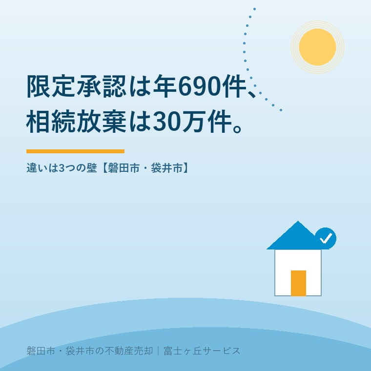

2026年8月27日｜カテゴリ：相続の手続／統計

この記事の要点
Q. 親の山林と田んぼを相続しますが、借金もあるかもしれません。放棄しかないんでしょうか。
A. 限定承認という三つ目の道があります。ただし全国で年690件しか使われていません。相続人全員が揃わないと申述できず、期間は3か月、さらに売っていなくても譲渡所得税がかかる仕組みがあるためです。
磐田市・袋井市・森町では、介護施設の運営から不動産事業を始めた富士ヶ丘サービスのような「介護×不動産」専門の会社に相談するという選択肢があります。
相続の相談で「放棄したほうがいいですか」と聞かれる回数が、この数年で増えました。親が住んでいた家のほかに、山林や田んぼが何筆かある。借金があるかどうかは、はっきりしない。そういう状態で3か月が過ぎていきます。
選択肢は二つではなく三つあります。単純承認、限定承認、相続放棄です。この記事は2026年8月27日時点で、最高裁判所事務総局『令和6年司法統計年報 3 家事編』（令和7年6月公表）、e-Gov法令検索の民法および所得税法、国税庁タックスアンサーNo.3105を確認して書いています。扱うのは限定承認と相続放棄の違いと、限定承認がなぜ年690件しか使われていないのかです。
限定承認は、民法922条に定めのある相続の方法です。条文はこうなっています。
「（限定承認）第九百二十二条 相続人は、相続によって得た財産の限度においてのみ被相続人の債務及び遺贈を弁済すべきことを留保して、相続の承認をすることができる。」（e-Gov法令検索 民法）
要するに「もらった財産の範囲でだけ払います」という承認です。借金が財産より多ければ、超えた分は払わなくてよい。財産が借金より多ければ、残りは相続人が受け取れます。相続放棄は、初めから相続人でなかったことになるので、借金も家も何も引き継ぎません。三つを並べると違いがはっきりします。
| 単純承認 | 限定承認 | 相続放棄 | |
|---|---|---|---|
| 債務の負担 | 全額を負う | 得た財産の限度 | 負わない |
| 実家を残せるか | 残せる | 残る可能性がある | 残せない |
| 誰が申述するか | 手続不要 | 共同相続人の全員が共同で（民法923条） | 各自が単独で |
| 期限 | ― | 自己のために相続の開始があったことを知った時から3か月（民法915条1項） | |
| 提出するもの | ― | 相続財産の目録と申述書（民法924条） | 申述書 |
| 公告 | ― | 限定承認後5日以内・2か月以上（民法927条） | 不要 |
e-Gov法令検索「民法（明治二十九年法律第八十九号）」により作成。2026年8月27日確認。
手続の重さが一目で分かります。相続放棄は1人で出せますが、限定承認は全員が揃わないと出せません。さらに限定承認をすると、そこから債権者を探す作業が始まります。民法927条は「限定承認をした後五日以内に、すべての相続債権者及び受遺者に対し」公告せよと定め、その期間は「二箇月を下ることができない」としています。公告は官報に載せます。放棄が一つの書面で終わるのに対し、限定承認は始まりの手続です。
限定承認が実際にどれだけ使われているかは、司法統計で分かります。最高裁判所事務総局『令和6年司法統計年報 3 家事編』第2表「家事審判・調停事件の事件別新受件数―全家庭裁判所」の数字です。
| 統計上の項目名 | 令和6年 新受件数（全国） | 静岡家庭裁判所管内 |
|---|---|---|
| 相続の限定承認の申述受理 | 690件 | 12件 |
| 相続の放棄の申述の受理 | 308,753件 | 8,497件 |
| 相続の承認又は放棄の期間の伸長 | 9,791件 | 237件 |
| 相続の限定承認又は放棄の取消し | 163件 | 4件 |
| （参考）家事事件の新受総数 | 1,042,229件 | 34,784件 |
最高裁判所事務総局『令和6年司法統計年報 3 家事編』（令和7年6月公表）第2表および第9表「家事審判・調停事件の事件別新受件数―家庭裁判所別」により作成。2026年8月27日確認。静岡家庭裁判所の数値は本庁と支部の管内合計。
全国で比べると相続放棄は限定承認の約447倍です。静岡家庭裁判所管内では8,497件と12件で、約708倍。差は全国よりさらに開いています。
時間の流れも見ておきます。相続放棄は平成17年の149,375件から令和6年の308,753件へ、20年で2.07倍になりました。一方で限定承認は平成17年に995件あり、令和6年は690件です。放棄が倍増した20年のあいだに、限定承認は3割減っています。制度が使われなくなっているのは、件数の伸び悩みではなく実数の減少です。
件数を見るときは、自分が扱っている単位まで割り戻すようにしています。全国の家庭裁判所は本庁が50庁あります。690件を50庁で割ると、1庁あたり年13.8件。おおよそ26日に1件です。静岡家庭裁判所管内の12件は、本庁と沼津・富士・下田・浜松・掛川の各支部を合わせた数ですから、県内どこかで月に1件という頻度になります。
もう一つ、静岡家庭裁判所管内の家事事件の新受総数34,784件のうち、限定承認は12件です。割合にして0.03％。家庭裁判所で1年に扱う家事事件を3,000件並べて、そのうち1件だけが限定承認、という密度です。
私の商売の側で言うと、当社が磐田市・袋井市で年間にお受けする実家じまいのご相談のなかで、限定承認という言葉が相続人の側から出てくることは、まずありません。県内で月1件という頻度は、地元の不動産屋が一度も立ち会わないまま何年も過ぎる、という意味です。この数字を見るまで、私も「珍しい手続」という感覚だけで、ここまで少ないとは思っていませんでした。
限定承認が使われにくい理由は、条文と税の側にはっきり書かれています。3つに分けて整理します。
民法923条は「相続人が数人あるときは、限定承認は、共同相続人の全員が共同してのみこれをすることができる」と定めています。1人でも反対すれば成立しません。相続放棄は各自が単独でできるので、この差は大きい。きょうだいが遠方にいて連絡が取りにくい、あるいは祖父名義のまま相続人が増えている家では、この時点で止まります。
民法915条1項は「自己のために相続の開始があったことを知った時から三箇月以内」と定めています。限定承認では、この3か月のあいだに相続財産の目録を作って家庭裁判所に提出しなければなりません（民法924条）。山林や田畑が複数の地番に散らばっている家で、名寄帳を取り、公図と登記を突き合わせ、目録の形にするには時間がかかります。実務では、この作業のほうが3か月より長い。
なお、この期間は伸ばせます。同条ただし書は「利害関係人又は検察官の請求によって、家庭裁判所において伸長することができる」としており、令和6年には全国で9,791件が申し立てられました。限定承認690件の14.2倍です。静岡家庭裁判所管内でも237件で、限定承認12件の約20倍。3か月で決められない人は多いのに、その受け皿になっているのは限定承認ではなく期間の伸長のほうだ、というのがこの数字の読み方です。
ここが、不動産を持つ家にとって一番効いてきます。所得税法59条は、限定承認による相続を「みなし譲渡」として扱います。
「（贈与等の場合の譲渡所得等の特例）第五十九条 次に掲げる事由により居住者の有する山林（事業所得の基因となるものを除く。）又は譲渡所得の基因となる資産の移転があつた場合には、（中略）その事由が生じた時に、その時における価額に相当する金額により、これらの資産の譲渡があつたものとみなす。 一 贈与（中略）又は相続（限定承認に係るものに限る。）」（e-Gov法令検索 所得税法）
国税庁のタックスアンサーNo.3105「譲渡所得の対象となる資産と課税方法」も、「限定承認の相続や限定承認の包括遺贈（個人に対するものに限られます。）」があった場合は時価で資産の譲渡があったものとされると整理しています。
誰も売っていないのに、亡くなった方が時価で売ったことにされる。その譲渡所得は亡くなった方の準確定申告に乗ります。値上がりしていた土地があれば、税額が出ます。逆に言えば、取得したときより値下がりしている土地ばかりなら影響は小さい。ここは財産の中身で結論が変わるので、税理士に必ず当たってください。取得費が分からない場合の5％の扱いは相続した実家を売ると税金はいくら？に書きました。
ここからは私の意見です。限定承認の申述に立ち会った手持ちの体験素材がないので、実話としてではなく、宅地建物取引士として相談を受ける側の考え方としてお読みください。
山林や農地が何筆もある実家の相続で、私が最初にお願いするのは財産の中身を紙に出すことです。負債があるかどうかより先に、資産の側を出す。名寄帳を取れば、その市町にある土地・家屋の一覧が出ます。限定承認を検討するにしても、放棄するにしても、相続財産の目録に近いものは結局どこかで作ることになるからです。
そのうえで、私はこう考えています。山林や田畑が中心の実家で、負債の有無だけを理由に限定承認へ進むのは、税の面で不利になることがある。農地は青地と白地で書いたとおり、農用地区域に入っていれば売り先が限られます。売れない土地に時価が付いて課税される、という順番になり得ます。手放す方向なら、相続土地国庫帰属制度のほうが検討の順番として前に来る場合もあります。どちらが有利かは財産の中身次第で、一般論では決まりません。
正直に書きます。690件という数字が「使いにくいから少ない」のか、「本当に必要な場面がそもそも少ないから少ない」のか、私には判断がつきません。私が見ている範囲は磐田市と袋井市の実家じまいで、そこに限定承認が必要な案件が来ていないだけかもしれない。ここは分からないと書いておきます。
制度への評価は、良い点から書きます。私は3つを評価しています。
注文も2つ書きます。批判ではなく、相続した実家の相談を毎月受けている一事業者からの報告です。
1つ目。みなし譲渡の説明が、相続人に届く場所に置かれていません。限定承認を検討する人が最初に見るのは家庭裁判所の手続案内です。ところが所得税法59条の話は税の側にあります。手続としては通ったのに、翌年に譲渡所得の申告が必要だと知る、という順番になり得ます。私は、財産に土地が含まれる場合だけでも、申述の入口で税の注意書きが並んでいてほしいと思っています。
2つ目。相続財産の目録を3か月で作れという前提が、地方の土地持ちの家に合っていません。市街地の家1軒なら間に合います。しかし山林と農地が複数の市町にまたがる家では、名寄帳の請求だけで往復が要る。もっとも、期間を無制限にすれば債権者が動けなくなるので、3か月という線自体は理解できます。どこまで求めてよいのか、私も決めきれずにいます。
磐田市と袋井市にお住まいの方の家事事件の管轄は、静岡家庭裁判所浜松支部です。相続放棄も限定承認も、申述先はここになります。遺産分割の10年ルールで書いた期限とは別の時計が動いている点にご注意ください。限定承認と放棄の3か月は、相続の開始を知った時から数えます。
相続すると決めていなくても、価値が減らない確認を3つ挙げます。
今日、どの手続にするかを決める必要はありません。知った日・財産の一覧・相続人の人数。この3つが分かっているだけで、弁護士や司法書士に相談したときの一回目の面談が、まったく別のものになります。放棄も限定承認も選ばずに承認する道を含めて、材料をそろえてから決めればいい。ただし3か月という期間だけは、こちらの都合で止まりません。相続放棄をしても残る管理義務のことも、あわせて見ておいてください。
当社は磐田市見付で介護施設を運営するところから不動産の仕事を始めました。ご相談の入口は、たいてい「親が施設に入った」「親を看取った」です。相続の手続をどうするか、という話はそのすぐ後に来ます。
限定承認や相続放棄の申述そのものは、弁護士・司法書士の仕事です。当社は行いません。当社ができるのは、その手前で財産の中身を並べることです。名義と相続登記の有無、抵当権が付いているか、接道と道路幅員、境界の状態、農地なら農用地区域かどうか。査定額を先に出すより、この整理のほうが判断の材料になります。
目指しているのは「高く売る」だけではなく、「家族が困らない売却」です。事実を整理する道具としてふじがおか実家カルテを用意しています。
限定承認と相続放棄の選択、申述の可否は弁護士または司法書士へ、みなし譲渡と準確定申告の扱いは税理士へ、農地の売買の可否は市町の農業委員会へご確認ください。
ふじがおか実家カルテ｜手続を選ぶ前に、財産の中身を並べます
3か月の起点が動く前に、土地の一覧だけでも形にしておきます。
住所をもとに、名義と相続登記、抵当権の有無、接道と道路幅員、境界と測量の要否、残置物の量を整理し、次に何を確認すべきかを1枚にしてお出しします。作成料0円・入力約1分。申込みだけで売却依頼にはなりません。
財産の中身によって変わるため、どちらが有利かは一律に決まりません。限定承認は民法922条により、相続で得た財産の限度でのみ債務を弁済すればよい方式で、残ったものは受け取れます。相続放棄は最初から相続人でなかったことになり、何も受け取れません。実家を残したいかどうかと、負債の額が財産を上回るかどうかで判断が分かれます。個別の判断は弁護士または司法書士へご確認ください。
できません。民法923条は「相続人が数人あるときは、限定承認は、共同相続人の全員が共同してのみこれをすることができる」と定めています。相続放棄は各自が単独でできるのと大きく違う点です。ただし、すでに相続放棄をした人は最初から相続人でなかったものとして扱われるため、残った相続人全員が揃えば申述できます。手続の可否は家庭裁判所または弁護士へご確認ください。
所得税法59条1項1号により、限定承認による相続では、亡くなった方がその時の時価で資産を譲渡したものとみなされます。国税庁のタックスアンサーNo.3105も同じ整理です。売っていなくても、値上がりしていた土地があれば亡くなった方の準確定申告で譲渡所得の対象になります。山林や田畑を含む相続では影響が出ることがあるため、必ず税理士へご確認ください。

この記事を書いた人：大石浩之（宅地建物取引士）
磐田市・袋井市・森町で「介護×相続×空き家」に特化した不動産売却支援を行う富士ヶ丘サービスの代表取締役・宅地建物取引士。介護施設の運営から不動産事業を始めた経験をもとに、売主とご家族が困らない売却を一件ずつお手伝いしています。プロフィール
本記事は2026年8月27日時点で、最高裁判所事務総局『令和6年司法統計年報 3 家事編』、e-Gov法令検索の民法・所得税法、国税庁タックスアンサーが公表している情報に基づく一般的な整理であり、個別の相続について判断するものではありません。件数は新受件数で、既済件数とは一致しません。制度・数値は改正により変わります。限定承認・相続放棄の選択と申述の可否は弁護士または司法書士へ、みなし譲渡と準確定申告の扱いは税理士へ、農地の売買の可否は市町の農業委員会へご確認ください。個別のご相談は当社までどうぞ。
磐田市・袋井市・森町の実家じまい・相続空き家相談
名寄帳を持ってきていただければ、一緒に土地を並べます
住所があいまいでも、名寄帳や固定資産税の通知書から名義・道路・農地区分・残置物の確認順を整理します。カルテ申込またはLINEで状況を送ってください。
富士ヶ丘サービス株式会社／静岡県磐田市見付5789番地1／TEL:0538-31-3308／静岡県知事 (2) 第14083号／代表取締役・宅地建物取引士 大石 浩之